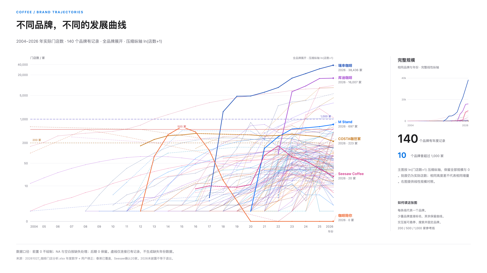

ALIGNED TRAJECTORIES / 同起点 · 同尺度
更换下方对照品牌
案例从同一底表按当前形态规则筛选，仅用于对照；不会修改品牌分类或多品牌叠加名单。
图表与数据均已内嵌。支持 JavaScript 的浏览器会自动显示完整交互页面；文件预览器可查看下方总览图。手机横屏看图更清楚。

01 / BRAND TRAJECTORIES
2004—2026 · 逐年门店记录 · 全部品牌默认展现
STORE FOOTPRINT 实际门店数 · 线性刻度
来源：20261027_咖啡门店分析.xlsx 年度数字 + 用户明确修正；不参考备注。
选几个品牌：左侧点“清空”后搜索勾选，或粘贴名单。切换“每个品牌单独看”，再点“截图模式”；按 Esc 返回操作区。
这里把“严重收缩”定义为末次有效门店数较历史峰值减少至少 50%。按历史峰值分组，比较的是本表样本的收缩分布，不是跨过某个门槛的失败概率。点击区间可查看该区间所有品牌，包括没有严重收缩的品牌。
| 历史峰值 / 家 | 样本数 | 严重收缩数 | 占该组 | 末次归零数 |
|---|
平台期仅表示连续记录的数字接近；不从曲线或备注推断经营原因。原表没有同口径的开关店、盈利、加盟与现金流资料，无法仅凭这些曲线解释收缩原因。
指标按完整 2004–2026 数据计算，不随图表年份裁切。按回落幅度降序排列；点击品牌可单独查看。
| 品牌 | 峰值 / 家 | 峰值年份 | 末次 / 家 | 末次年份 | 较峰值回落 | 形态 / 状态 | 平台期 | 后续数据 |
|---|
跟随所选品牌。开头 0、NA 与空白留空，后期 0 保留并标记倒闭。可用上方“导出所选数据”下载。
开头连续的 0 与空缺不绘制，从首次正数开始。此后的 0 保留为归零线索；末次为 0 标为“末次归零，未见恢复”，并记录首次归零年份。如归零后又出现正数，则标为“曾归零后恢复”。NA、N/A 和空白按缺失处理，不补 0、不算倒闭。
所有曲线使用实际门店数。总览前两种视图为线性纵轴；全品牌展开按 ln(门店数+1) 压缩纵轴，刻度仍为实际店数，相同高度差不代表相同增量。分图可各自缩放或统一尺度。圆点为观测值，直线连接相邻年份；跨缺失年份的虚线不代表补值，可切换为断线。曲线停在末次有效记录。
回落幅度 =（历史峰值 − 末次有效值）÷ 历史峰值。峰值重复时列出全部年份。此处历史峰值回顾按全体有数据品牌计算，不随当前选择或年份裁切变化；区间下限含、上限不含。各组使用各自样本数作分母。分组依据是已经观察到的历史峰值，会受样本选择与记录长度影响，因此不能把组内收缩占比理解为行业失败概率。
Pluto 型是“增长后平台”的工作分类：平台至少包含连续 3 个年度且无缺年；（平台最高值 − 最低值）÷ 最高值 ≤10%；平台最低值 ≥全表峰值的 80%，并比此前某次记录至少高 50%；平台可延续到末次披露，不再要求至少下降20%；平台后没有再超过该高点10%以上。末次值在平台高点90%以上列为平台区间内，低于90%列为平台后回落。若有多个合格区间，优先展示最长、其后选较晚者。这是数值形态识别，可与严重收缩类别重叠，并不解释经营原因。
“2026 未披露”表示该年没有数值记录，不视为退出。2026 沿用源表年度标签；年度尚未结束，可在研究页切换截至2025比较。不参考备注列。所有数据基于 Summary Table。HTML 可离线使用，可保存当前视图或导出带形态分类的年度底表。
从起步、复制到规模化，看清持续增长、Pluto 平台与衰退三种走向；再用底表里的品牌逐一对照。
增长组沿用“扩张至新高／近期加速”分类：末次记录处于历史最高；不等于经营成功。星巴克属于增长组。其他形态默认收起，可手动加入；切换快捷组会恢复该组名单。
勾选后立即加入图表。不会修改底表或失败分类。
案例从同一底表按当前形态规则筛选，仅用于对照；不会修改品牌分类或多品牌叠加名单。
用于核查数据；它们描述已发生的记录，不是上方情景路径的拟合参数。
能力阶段借鉴你提供的框架，数字是阶段名称，不是门店门槛。门店序列只能验证扩张节奏与回落；是否具备上述能力，还需单店经营和组织证据。
默认 t = 记录年份 − 首条正数年份。选100／500／1,000家时，用首条达到门槛的真实记录作为第0年；不插值推算跨线日期，起点店数可能高于门槛。缺年仍占时间位置，曲线停在末次披露。
相对规模 = 当年店数 ÷ 该品牌全记录最高店数 ×100%。这是事后形态比较，不是增长率或未来预测。所有分图使用相同横纵轴；可切回实际店数，同一单位比较增量。压缩尺度按 ln(店数+1) 排布，保留0。
形态按完整记录计算，不随时间起点改变。按以下顺序互斥归类：① 少于3条数值记录为“记录不足”；② 符合Pluto规则；③ 曾从此前最高值回落至少20%，此后从低点增加至少25%（低点为0时恢复正数），且末次达到此前高点的80%以上，为“回落后修复”；④ 末次较最高值回落至少20%，为“高位后回落”；⑤ 最近4个连续年度的三个增量均为正且逐次增大、末次增量至少是首个的1.5倍，同时末次处于历史最高，为“近期加速”；⑥ 末次处于历史最高、且较首条正数至少增长50%，为“扩张至新高”；其余为“波动 / 缓增”。“高位后回落”中也可能包含记录开始前已达到最高规模的品牌，逐品牌可检查。
Pluto 的“平台后回落”要求末次记录晚于平台结束，且较平台高点回落超过当前波动容忍度；其余列为“平台区间内”。选中的平台本身仍延续到末次时，不把其中的正常波动标为“平台后”。若平台后先跌再回到区间内，会在证据说明中显示。连续旧数不证明真实经营停滞；缺失年份不参与平台连续性判断，也不作为零。分类是可审计的形态标签，不是经营质量评分或统计聚类结果。
03 / THE SURVIVAL THESIS
横向比较使用期初店数，结果使用期末相对截至期末历史峰值的回落。每品牌只计一次；期初已失败的排除，期末未披露的不进分母。这是所选窗口的样本期末失败占比；期中曾触线但期末恢复的品牌不计入本分子，见下方跨线逐年追踪。不是年死亡率或行业概率。2026为本次更新时的记录，未确认完整年末口径；观察期按年度标签比较。
① 平均线是本观察窗口所有有效品牌的失败比例，不是平均门店数，也不是行业死亡率。各点按期初规模分组，避免用衰败后的剩余店数反推风险。
② Wilson 95%区间：令 p=k/n、z=1.96，中心 C=(p+z²/2n)/(1+z²/n)，半宽 H=z×√[p(1−p)/n+z²/4n²]/(1+z²/n)，区间为[C−H,C+H]。即使k=0，上限也大于0。它刻画独立品牌二项抽样假设下的不确定性，不涵盖披露偏差、样本选择或品牌间关联。
③ 仅核查既有200／500／1,000家参考线，不全表搜索“最优”分界。每条线分别把品牌分为低于与达到门槛两组，用双侧Fisher精确检验比较失败比例，再对三项p值作Holm校正。p值不是“安全的概率”；未发现差异也不等于证明相同。由于已看过这批数据，这仍是探索性检验，需要独立样本验证。
④ 以下历史三年窗口使用当前失败阈值重算。早期事件少，窗口相互重叠；它们不能充当独立的预测验证。现有底表不足以证明超过某个店数就会更好地存活，更不能推断扩店本身降低风险。
方法依据：NIST · Wilson比例区间；SciPy · Fisher精确检验；R · Holm多重检验校正。仅采用统计方法，全部输入来自本研究底表。
阈值越严格，识别出的失败越少。重点检验：百店至五百店相对百店以下的差异，会不会随定义改变而消失？
每次都重新判定期初是否已失败，所以分母可能变化。三组来自同一底表，是敏感性核查，不是三份独立证据。小样本下不宣称统计显著或规模导致失败。
每品牌从首次数值记录达到门槛起，逐年检查至第N年；任一年缺失即列“路径不完整”，未满N年列“观察期不足”。分母仅为完整年度路径，分子为其中曾触发研究失败的品牌。首条数值已过线可能晚于真实跨线，明细单列。过线品牌是经过筛选的群体，不能解释为扩店的因果收益。
回落 D = 1 − 末次店数 / 截至当年已观测最高店数。D ≥ 所选阈值即“研究失败”；0自然包含其中。Seesaw按用户指示加入经营失败标签，店数仍为20，不改成0。
默认2023→2026；起点必须有正数且尚未失败。按2023实际店数分组，再看2026结局。未披露不补零，也不当成功；每个有效品牌只出现一次，避免把长期记录重复计权。
70/80/90%检验定义敏感性；1/3/5年比较观察窗口；首次跨线后按完整逐年路径看事件。历史最高规模只用于案例画像，不拿最终峰值冒充事前风险因素。
本样本中，百店规模段的失败占比值得优先排查：单店模型能否复制、组织成本与现金流是否匹配规模，是下一步应补的经营证据。门店数能提示排查顺序，不能独自证明这些机制。
“有店”不自动等于健康，“未达到80%回落”也不等于盈利。千店样本表现出的韧性值得重视；Tims的千店平台又提醒我们，存续与继续增长是两回事。规模过线之后，仍要看同店表现、现金流和新增门店质量。
① 截止年之前的最后披露可以用于最新失败名单，标出真实年份；只有期末该年有数值的品牌才进入固定期面板分母。② 曾深度回落后恢复的品牌不永久判死，历史触线与最新状态分开。③ 只有单年数值的品牌可以画图，不能用来证明经历观察期后仍然存活。④ 峰值仅使用截至判断年份的已观测数值；缺失可能漏掉更高峰值或短暂失败，因此结果是记录可见的结局。⑤ 本表不是随机抽样的全行业普查；不借用reference参数，不拟合缺乏依据的平滑死亡概率曲线。
只使用年度数字与用户明确修正，不参考备注列。春莱已覆盖、Seesaw确认20家；只保留有门店记录的品牌。
年度合计仅加总当年有记录的数值，不把前期记录结转，不代表全行业门店总量。